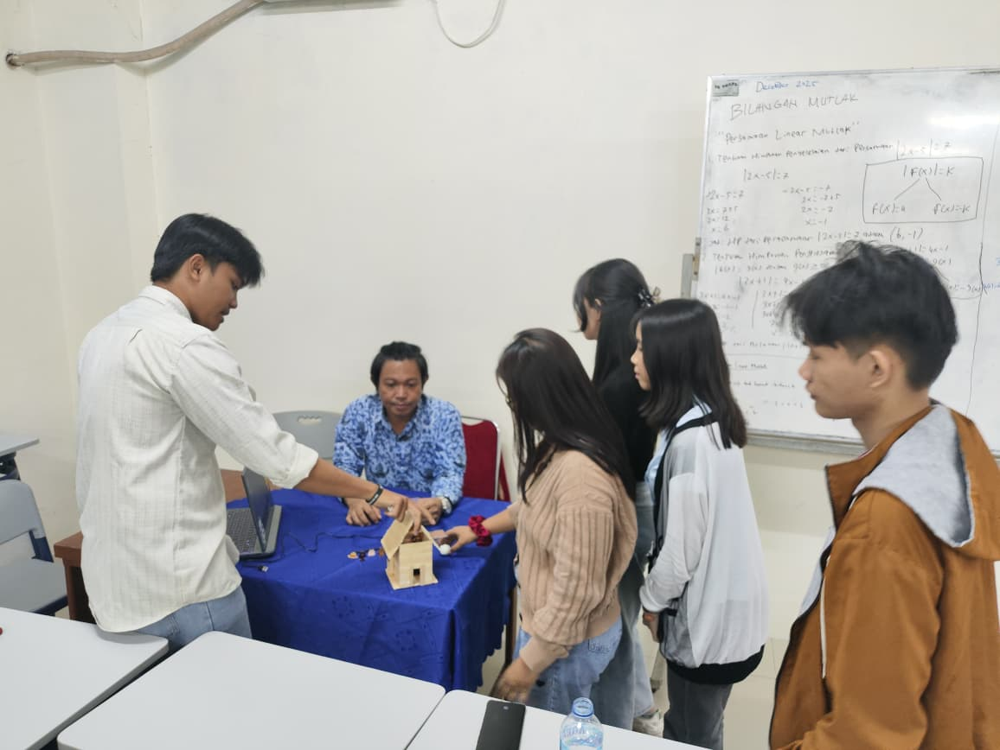

Pernahkah kamu meninggalkan rumah dengan jemuran di luar, lalu tiba-tiba hujan turun? Melalui proyek Internet of Things (IoT) ini, aku dan kelompok mengeksplorasi penggunaan mikrokontroler Arduino Uno untuk menciptakan prototipe jemuran otomatis sebagai solusi cerdas dan praktis untuk masalah tersebut.
Fokus utama dari sistem ini adalah pemanfaatan Sensor Hujan (Rain Sensor). Cara kerjanya sangat straightforward namun efektif: ketika pelat sensor mendeteksi adanya rintik air hujan, Arduino akan langsung memproses sinyal tersebut dan menggerakkan motor untuk menarik jemuran ke tempat yang teduh secara otomatis. Sebaliknya, saat hujan reda dan pelat sensor kembali kering, motor akan bergerak berlawanan untuk mengeluarkan jemuran kembali.
Bagian paling menantang sekaligus menyenangkan adalah merangkai logika kodenya dan melakukan kalibrasi nilai sensitivitas pada sensor hujan. Sistem harus diatur sedemikian rupa agar responsnya pas—tidak gampang "tertipu" oleh embun pagi, tapi harus cukup gesit saat hujan benar-benar turun. Proyek jemuran pintar ini benar-benar pengalaman seru dalam menggabungkan hardware dan software untuk memecahkan masalah sehari-hari!